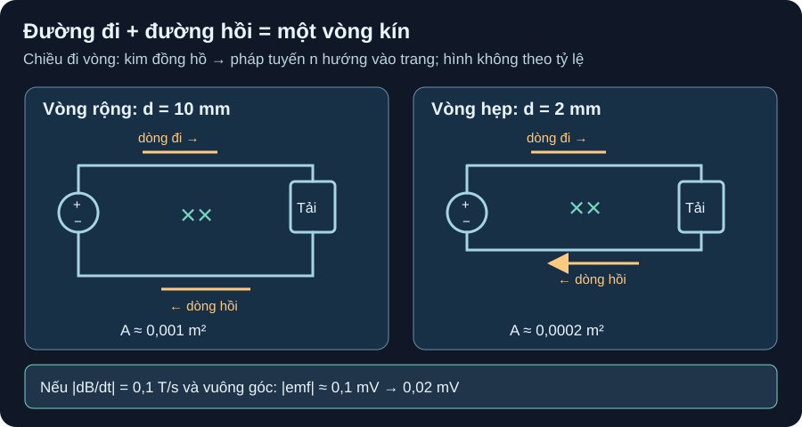

Từ Trường, Cảm Ứng & Đường Hồi Dòng
Dòng đi đâu phải trở về nguồn: diện tích vòng kín quyết định thông lượng trong một mô hình trường ngoài, rồi mới xét layout thật.
- Truy vết đường dòng đi qua tải và đường hồi về nguồn thành một vòng kín; chọn chiều đi vòng và pháp tuyến có dấu.
- Tính thông lượng
Φ≈BA cosθvà độ lớn sức điện động cảm ứng|emf|≈A|dB/dt|trong trường ngoài đều, vòng cố định. - So hai khoảng cách đi–hồi, tính đổi mm→m và chỉ ra điều kiện làm so sánh hợp lệ.
- Dùng TI Fig. 6c/6d để nhận diện đường hồi bị vòng qua khe plane, nhưng không biến phép tính mô hình thành bảo đảm EMC của PCB.

Đọc topology và chiều từ thông bằng chữ
Mỗi hình có nguồn DC thấp áp bên trái và tải bên phải. Từ cực dương nguồn, dòng quy ước đi theo nhánh trên sang phải, qua tải xuống nhánh dưới rồi về cực âm nguồn. Chiều đi vòng theo hình là kim đồng hồ; quy tắc tay phải cho pháp tuyến dương hướng vào trang, trùng dấu ×. Vòng 1 dài 0,100 m, nhánh đi–hồi cách 0,010 m nên diện tích xấp xỉ 0,001 m². Vòng 2 giữ chiều dài, khoảng cách 0,002 m nên diện tích xấp xỉ 0,0002 m². Không dùng hình để suy chiều dòng cảm ứng nếu chưa nêu chiều biến thiên B.
1. Định hướng trước khi tính dấu
Từ thông xuyên mặt bất kỳ có pháp tuyến chọn trước là Φ=∫B·n dA. Nếu trường ngoài đều, vòng phẳng cố định, Φ≈BA cosθ, với θ là góc giữa B và pháp tuyến của mặt vòng, không phải góc với chính mặt phẳng. Định luật Faraday cho sức điện động theo chiều đi vòng đã chọn emf=−dΦ/dt. Dấu trừ là Lenz: tác dụng cảm ứng chống lại biến thiên thông lượng. OpenStax University Physics 2 §13.1, Eq. 13.1–13.2 và Fig. 13.4 định nghĩa thông lượng, pháp tuyến và dấu này.
Ở A16-1, chọn chiều dọc nhánh trên sang phải rồi trở về theo nhánh dưới: nhìn từ phía người đọc là kim đồng hồ, nên pháp tuyến dương hướng vào trang. Nếu B ngoài tăng theo hướng vào trang, dΦ/dt>0 và emf theo chiều kim đồng hồ là âm; chiều cảm ứng có xu hướng ngược kim đồng hồ. Nếu đề chỉ cho |dB/dt| mà không cho chiều tăng/giảm, chỉ được báo độ lớn, không tự gán dấu. Từ trường do chính dòng của mạch tạo ra liên quan tự cảm; OpenStax §14.2 giải thích emf=−Ldi/dt, nhưng không cung cấp một trị L cho vòng PCB giả định này.
2. Ví dụ giải: giữ cùng trường ngoài và chiều dài
Giả định bài toán: nguồn–tải thấp áp lý tưởng, một vòng chữ nhật dài ℓ=100 mm=0,100 m, trường ngoài đều, vuông góc mặt vòng và có |dB/dt|=0,1 T/s. Chỉ khoảng cách đi–hồi đổi từ 10 mm sang 2 mm; không khẳng định phân bố B hoặc đường hồi thực của PCB như vậy.
- Vòng rộng:
d₁=10 mm=0,010 m,A₁≈ℓd₁=0,100×0,010=0,001 m². Vì|cosθ|=1,|emf₁|≈A₁|dB/dt|=0,001×0,1=0,0001 V=0,1 mV=100 µV. - Vòng hẹp:
d₂=2 mm=0,002 m,A₂≈0,100×0,002=0,0002 m²;|emf₂|≈0,0002×0,1=0,00002 V=0,02 mV=20 µV. - So sánh: cùng ℓ, cùng trường và góc, diện tích và độ lớn emf của vòng thứ hai bằng
1/5. Đây là phép suy trong model một vòng/trường đều. Không phải số nhiễu đầu vào, phát xạ EMI hoặc điện áp đo được trên một board.
Đơn vị kiểm: m²·T/s=V theo Faraday. Nếu hướng B cố định nằm trong mặt phẳng vòng, nó vuông góc với pháp tuyến, θ=90° và cosθ=0; khi chỉ độ lớn B thay đổi, thành phần đó cho thông lượng và emf xuyên vòng bằng 0. Trong lúc trường đang xoay, góc biến thiên theo thời gian có thể tạo emf; không áp kết luận 0 cho quá trình xoay. Mô hình này cũng không chứng minh PCB không chịu nhiễu từ nguồn khác hoặc từ điện trường.
3. Từ vòng lý tưởng sang quyết định layout
TI High-Speed Layout Guidelines, SCAA082A Rev. A (Aug. 2017), §1.6, Fig. 6a–6d phân biệt return current DC có xu hướng theo đường điện trở thấp và return ở tần số cao theo đường trở kháng thấp gần trace tín hiệu. Fig. 6c minh họa khe ground plane ép đường hồi vòng qua xa, tăng diện tích vòng; Fig. 6d minh họa cầu 0 Ω qua khe để tạo đường hồi ngắn hơn. Tài liệu cũng nêu phương án tốt nhất trong trường hợp đó là tránh khe ở mặt phẳng tham chiếu. Đây là nguyên tắc bố trí/so topology, không phải hệ số quy đổi 100 µV của ví dụ sang EMI của một thiết kế thật.
Khi đọc một sơ đồ/PCB dự kiến, hãy đánh dấu nguồn, tải, đường dòng đi ở tần số quan tâm và return path liên tục về cùng nguồn. Nếu trace vượt một khe plane, cần xem đường hồi thực có thể chạy ở đâu và độ lớn vòng tăng thế nào; điều này có thể khiến ta đổi route hoặc mặt phẳng tham chiếu trước khi chế tạo. ADI AN-1368 cho ví dụ lọc nguồn bằng ferrite bead với trở kháng thay đổi theo DC bias/tần số; bead không thay thế đường hồi liên tục và tài liệu đó không chứng minh phép tính Faraday của hình A16-1.
4. Hoạt động tái lập trên sơ đồ và bảng tính
Chép hai vòng A16-1, tô hai đường đi–hồi và chọn pháp tuyến vào trang. Nhập
ℓ=0,100 m,d={0,010;0,002} m; tínhA=ℓd. Ghi rõ một vòng, trường đều, diện tích không đổi.Tạo ba cột
|dB/dt|={0;0,1;0,2} T/s; tính|emf|=A|dB/dt|vớiθ=0°rồi thửθ=90°so với pháp tuyến. Đối chiếu bảng và mã kiểm số.Trên một bản in sơ đồ PCB giả định, đánh dấu tín hiệu cắt qua khe plane như TI Fig. 6c và so đường hồi khi có cầu như Fig. 6d. Ghi nhận đây là đọc hình tham khảo của TI, không phải PCB/EMC test của giáo trình.
| |dB/dt| | Vòng 10 mm | Vòng 2 mm | θ=90° với pháp tuyến |
|---|---|---|---|
| 0 T/s | 0 µV | 0 µV | 0 µV |
| 0,1 T/s | 100 µV | 20 µV | 0 µV |
| 0,2 T/s | 200 µV | 40 µV | 0 µV |
Vòng trên PCB thật phụ thuộc lớp, plane, đường về của từng phổ tần, thành phần trường và tải. Giá trị 0,1 T/s là giả định học tập, không lấy từ TI hay một môi trường đo cụ thể. Muốn đánh giá board cần bản PCB/revision, stack-up, part, return-path map, nguồn thấp áp giới hạn dòng, băng tần, đầu dò và kế hoạch đo được duyệt; chưa có dữ liệu đó. Không suy rằng rút d xuống 2 mm sẽ luôn giảm EMI đúng 5 lần, hoặc rằng ferrite tự chữa đường hồi đứt.
Một vòng cố định dài 50 mm, đường đi–hồi cách 4 mm. Trường ngoài đều, vuông góc mặt vòng, có |dB/dt|=0,2 T/s. Tính diện tích và |emf|. Ở một tình huống riêng, hướng trường được giữ cố định tại góc 90° với pháp tuyến trong khi độ lớn B thay đổi: kết quả mô hình ra sao? Có thể xác định chiều dòng cảm ứng từ đề này không?
- Hình/giả định, 1 điểm: vòng kín một lượt, trường đều, diện tích cố định;
ℓ=0,050 m,d=0,004 m, lúc đầu|cosθ|=1. - Diện tích, 1 điểm:
A≈0,050×0,004=2×10⁻⁴ m²; không nhân trực tiếp 50×4 mà quên mm→m. - Emf, 1 điểm:
|emf|≈(2×10⁻⁴ m²)(0,2 T/s)=4×10⁻⁵ V=40 µV. Ở góc cố định 90° với pháp tuyến,cos90°=0nên thành phần thông lượng đó cho 0 trong model; không suy 0 cho giai đoạn đang xoay trường. - Dấu/giới hạn, 1 điểm: đề chỉ cho
|dB/dt|, chưa nói B tăng hay giảm theo pháp tuyến đã chọn, nên chưa chốt chiều cảm ứng. Kết quả không là điện áp đo PCB; muốn ký layout phải biết đường hồi thật và điều kiện đo.